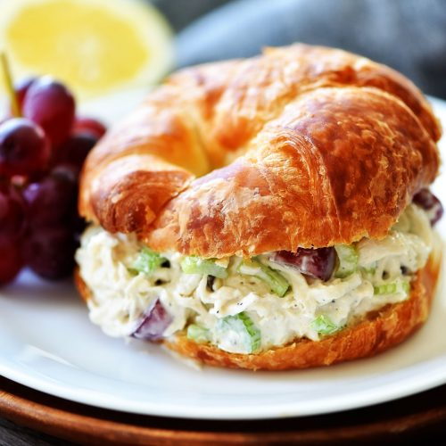

Chicken Salad Recipe

Description
Chicken salad sandwiches are one of my go to meals on a hot summer day. Nothing is more relaxing than enjoying a tasty sandwich with a side of lemonade (more on that recipre next week).
Everytime I have friends over for my chicken salad they ask me, "What is your secret ingredient?" It's not the apples or the grapes, no matter how tastey they are. In fact it's something that you probably have in your pantery and costs pennies! It's ranch dressing seasoning!
Ingredients
- 4 cups cooked shredded chicken
- 1/2 cup chopped fuji apple
- 1/2 cup chopped red grapes
- 1/2 cup chopped celery
- 2 TBS chopped pecans
- 1 cup mayonnaise
- 1 1/2 tsp ranch dressing seasoning
- 1/4 tsp salt
- 1/4 tsp black pepper
Steps
- Using a large bowl, add the chicken, apples, grapes, celery, pecans, mayonnaise, salt, pepper, and ranch dressing seasoning. Stir gently to combine everything and mix well.
- Cover and place in refrigerator for at least 30 minutes to let the flavors meld together.
- Serve on bread or crackers. Refrigerate when not serving. Will keep in fridge for up to 1 week.